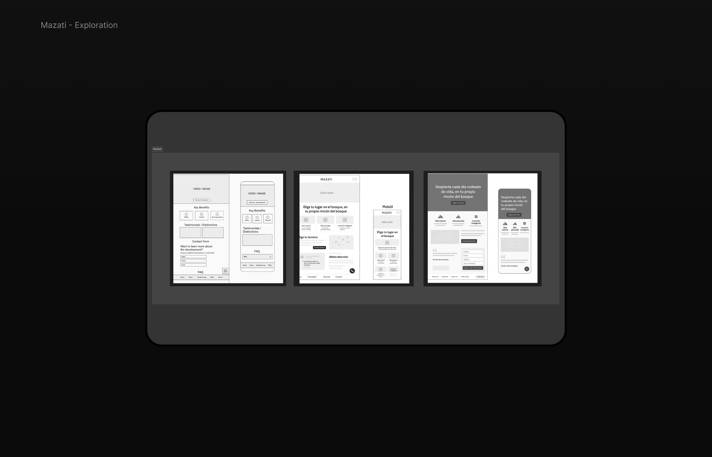
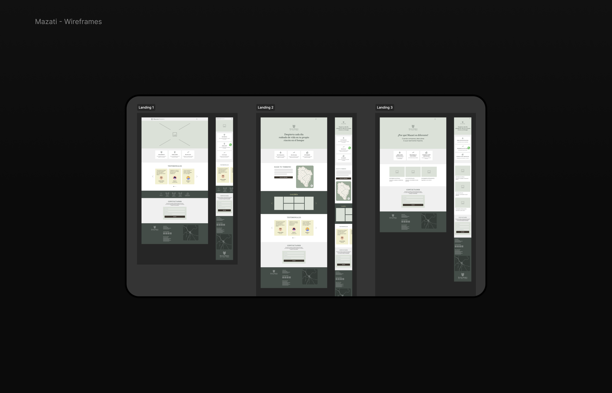
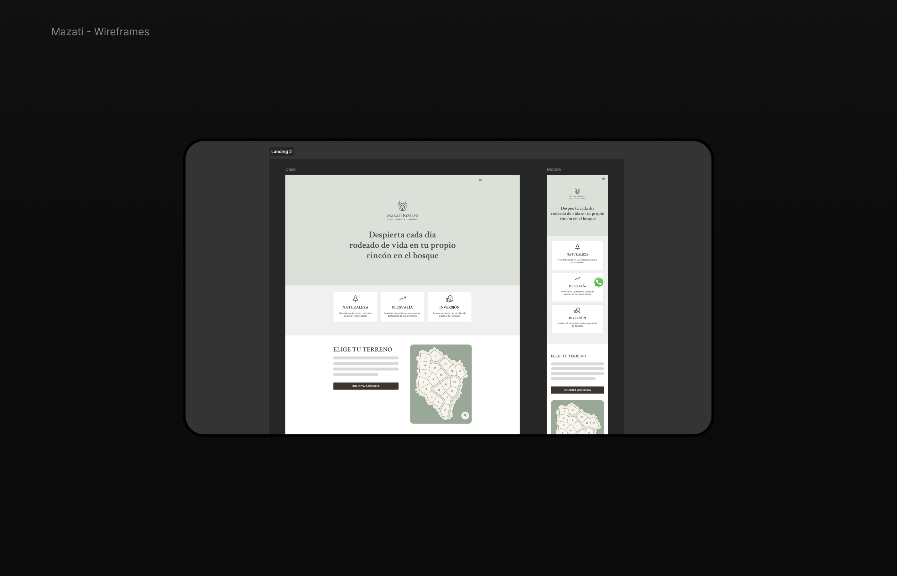
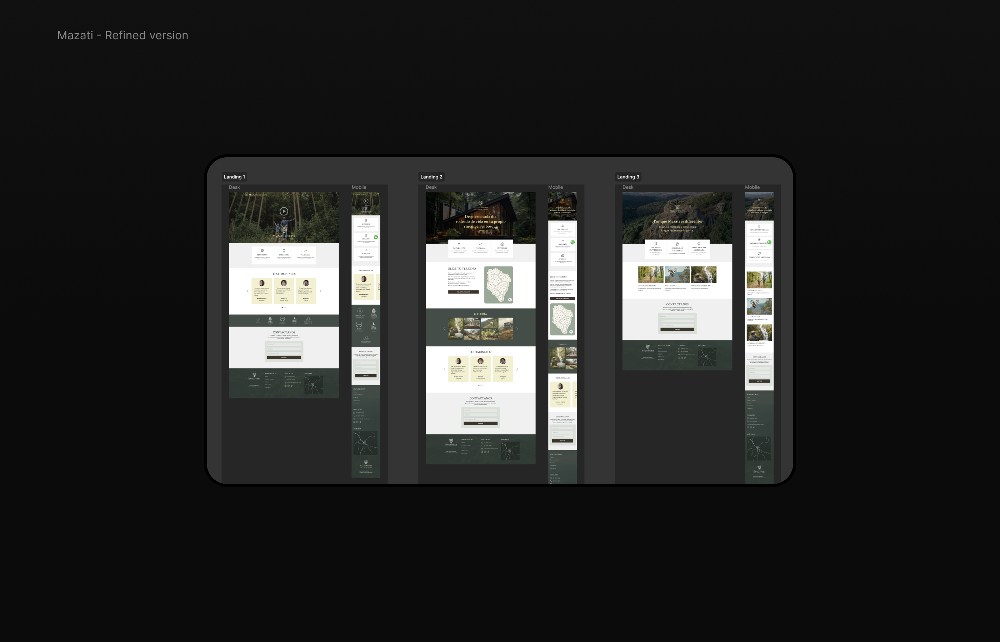
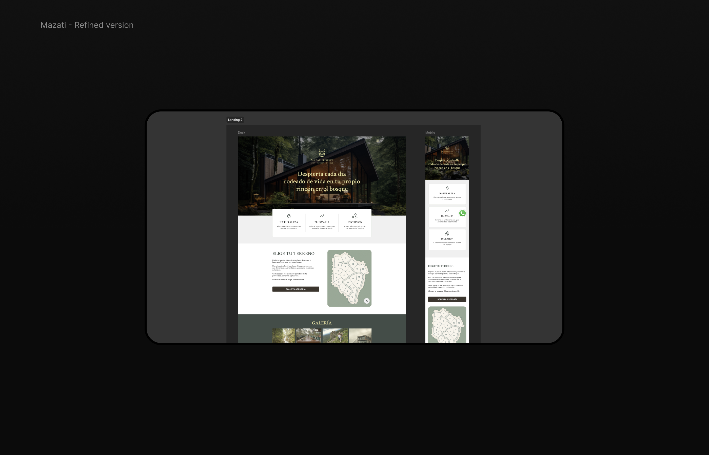

Mazati Reserve
Wireframes
Mazati Reserve is an eco-habitable land project located in the forest in Jalisco, México.
I joined the project in a rush to cover an urgent need: design a few landing page directions based on different types of search intent.
The scope was short, but interesting: exploring how the experience changes depending on how users arrive from Google.
There wasn't much information at the beginning. What we knew:
Main question: How should the landing page adapt depending on what the user is looking for?
Instead of a single generic landing, I explored 3 directions based on search intent:
01
Brand Search
Users already know Mazati → build trust and convert
02
Aspirational
Users exploring lifestyle → more emotional and visual
03
Rational Search
Users comparing options → clear benefits and differentiation
Focused on structure and content priority

Better hierarchy, clearer sections, stronger CTAs


More polished layout and responsive thinking


Even though it was a short project, it helped me:
Think in terms of search intent-driven UX
Make decisions with limited information
Move fast and iterate quickly
Bring direction with limited time and context
The project continued evolving with more inputs and assets. The final design changed significantly and was handled by another designer.
My contribution was focused on:
Not a long or perfect project, but one where you need to bring direction with limited time and context. And that's where good UX thinking really matters.